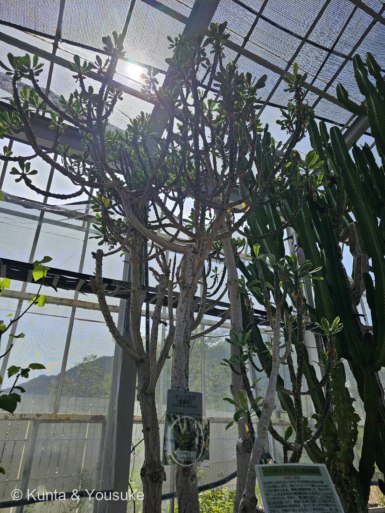

地図を読み込んでいるよ…
🔍 写真も地図も、押しているあいだ拡大して見られるよ（スマホは指を置いてすこし待ってね）。
🌍 の地図＝この子がもともと自生している場所を緑に。インド。英語版Wikipediaは「インド中部、オディシャ、南インドのデカン地方が原産で、その後ベンガル西部・スリランカ・東南アジアに広がった」とし、広島市植物公園の名札は「インド東部原産」とする。⚠地図はインドを国ごと塗ってあるが、ほんとうはもっとせまい。
⭐インドの子だよ。英語版Wikipediaは「インド中部、オディシャ、南インドのデカン地方が原産で、その後ベンガル西部・スリランカ・東南アジアに広がった」とし、広島市植物公園の名札は「インド東部原産」と書いていた。⚠地図はインドを国ごと塗ってあるけれど、ほんとうはもっとせまい——⭐中部・東部（オディシャ）・南部のデカン高原のあたりだと思ってね。⚠スリランカや東南アジアは、あとから広がったところなので塗っていない。⭐⭐インドではこの木を「生け垣」にしてきた——⭐英名のひとつが hedge Euphorbia（生け垣のトウダイグサ）。土地の境をしめし、家畜を囲うために植えられた（英語版Wikipedia）。⭐とげがあって、乳液が有毒で、乾いても枯れない——⭐⭐塀にするには、これ以上ない木だったんだね。⚠日本は塗っていない＝温室でしか育たない子だよ。
⚠ 地図は国（日本と中国だけ県・省）までしか塗れないから、ほんとうの分布より広く見えていることがあるよ。地図はだいたいの場所。正確なところは、上の文を見てね。
キリンカク（麒麟角）
Euphorbia neriifolia L.
英名 · Indian spurge tree／hedge Euphorbia／Oleander spurge／fleshy spurge
トウダイグサ科 · Euphorbiaceae（ユーフォルビア属）── 5人目のトウダイグサ科。4人目のユーフォルビア属
燻太さんの一言「サボテンの温室にいた子。人間ならうんざりするほど暑い環境でも、この子達は元気そう。背が高すぎて、茎の様子はなかなか観察しづらいね」──汗をかかない体になっているんだ
⭐⭐ 名前と学名の由来 ── キョウチクトウのような葉
- ⭐⭐⭐種小名 neriifolia は、Nerium（キョウチクトウ属）＋folium（葉）＝「キョウチクトウのような葉」。
- ⭐⭐英名のひとつが Oleander spurge（オレアンダーのトウダイグサ）——oleander はキョウチクトウの英名だよ。
- ⭐⭐⭐そのキョウチクトウ本人が、この図鑑にいる。——061 キョウチクトウ（Nerium oleander）。⭐病院からの帰り道の、街路の植え込みで会った子。⭐⭐インドの温室の木の名前が、広島の街路樹を指していたんだね。
- ⚠ただし、科はぜんぜんちがう——キョウチクトウはキョウチクトウ科、この子はトウダイグサ科。⭐似ているのは葉の形だけ。⚠でも「どちらも有毒」というところまで似てしまっている。
- 和名の「麒麟角」は、角のように突き出す枝ぶりから。⚠この由来をはっきり書いた出典には当たれなかったので、ぼくの理解だと思ってね。
- 学名の「L.」は、リンネ。⭐1753年に記載された、古くから知られている木だよ。
この植物のこと
- トウダイグサ科ユーフォルビア属の多肉植物。⭐5人目のトウダイグサ科（062 ハツユキソウ・063 ショウジョウソウ・072 ハナキリン・091 アカメガシワ）で、⭐4人目のユーフォルビア属。
- ⭐園の解説板いわく「全世界に分布するトウダイグサ科植物は約300属7,500種以上あり、特にトウダイグサ属 Euphorbia が1,500種を占める」。⭐⭐ひとつの属だけで1,500種。
- 高さは6.5mまでの木になる（英語版Wikipedia）。⭐燻太さんが見上げたのも道理だね。
- 枝は「ほぼ五角形」で、稜のふちに小さな円錐形のいぼが並ぶ。刺は1本ずつつき、長さ12mmまで（同）。⚠おまけのキリンカン（E. grandicornis）が「対の刺」なのと、ここがちがう。
- ⭐インドでは生け垣として植えられてきた（同。英名も hedge Euphorbia＝生け垣のトウダイグサ）。⭐土地の境や、家畜を囲うために。
- 園の名札には「1〜2月頃 こんな花が咲きます」とあって、黄緑色の小さな花の写真がついていた。⏳まだ見ていないよ。
同定について ── 園の名札で確定／写真が1枚だけの理由
⭐ この子は、園の名札で決まった。——「キリンカク（麒麟角）／Euphorbia neriifolia L.／インド東部原産／トウダイグサ科／1〜2月頃 こんな花が咲きます」。
⚠ 燻太さんは近くで撮った1枚も送ってくれたのだけれど、そちらは公開していない。——⭐園の解説板の本文が読めてしまうから（200で決めたルール）。⭐だからこのページの写真は1枚だけ。⭐⭐そのかわり、名札も解説板も、ぼくはちゃんと読んで、出典として引いているよ。
⭐⭐⭐ 燻太さんの「人間ならうんざりするほど暑い環境でも元気そう」── 汗をかかない体
⭐ ほんとうにそう見えたよね。⭐⭐この子は、暑さと乾きに対して、少なくとも3つの手を打っている。
① 茎を水のタンクにする。
「茎は多肉質になり、高温と乾燥に適応した特徴がある」（広島市植物公園の解説板「トウダイグサ科の多肉植物」）
② 葉を減らす、そして落とす。
- 同じ解説板は「葉は縮小退化し、とげがあり」と書いている。
- ⭐でもこの子は、ちゃんと葉を持っている。——英語版Wikipediaによれば、葉は若い枝と枝先につき、長さ10〜18cm。⭐⭐そして「deciduous ... falling in late summer and early autumn（落葉性で、夏の終わりから秋のはじめに落ちる）」。
- ⭐写真①で、葉が枝の先にだけ集まっているのが見えるでしょう。⭐⭐いちばん光の当たるところにだけ葉を置いて、あとは茎で光合成する、という配分だね。
③ ⭐⭐⭐夜に息をする（CAM型光合成）。
- 多肉植物の多くは、昼ではなく夜に気孔を開いて二酸化炭素をためこむ。⭐昼に開けば、そのぶん水が逃げてしまうから。
- Holtum らは「アメリカのサボテンやアフリカのユーフォルビアのような大型の茎多肉植物は、例外なくCAM（ベンケイソウ型有機酸代謝）を使う」と書いている。
- ⚠この種（E. neriifolia）でCAMを直接確かめた出典には当たれなかった。⭐でも、同じ属の072 ハナキリン（E. milii）については、CAMを調べた論文がちゃんとあるよ〔Herrera ら 2013, AoB PLANTS〕。
⭐⭐⭐ つまり、「元気そう」に見えたのは、汗をかかない体になっているから。——⭐ぼくたちが暑さでへとへとになるのは、水を捨てて体を冷やしているからだけれど、この子は水を捨てない道をえらんだんだ。
⭐⭐⭐ サボテンそっくり、でもサボテンじゃない
⭐ 園の解説板が、いちばん大事なことを書いていた。
「熱帯の乾燥地域には、見かけがサボテンに似る多肉性の種（園芸的には多肉ユーフォルビアと呼ばれる）があり、葉は縮小退化し、とげがあり、茎は多肉質になり、高温と乾燥に適応した特徴がある」
⭐⭐ サボテン科（南北アメリカ）と、多肉ユーフォルビア（アフリカ〜インド）。——血のつながりはないのに、同じ答えにたどりついた。⭐乾いた土地では、「茎を太らせて、葉を捨てて、刺を持つ」が正解なんだね。
⭐⭐⭐ 見分けかたは、ひとつ。——傷つけると白い乳液が出るのがユーフォルビア。サボテンは出さない。⚠この見分けは、じつは072 ハナキリンのおまけに、もう書いてあったんだ。
⚠⚠ ただし、その乳液は危ないよ。——園の解説板は「根・茎・葉に乳液を含み、『ユーフォルビン』と呼ばれるアルカロイドの有毒成分を含むものが多い」と書いている。⭐英語版Wikipediaも「The latex is slightly irritating on contact with the skin and toxic（乳液は皮膚に触れるとやや刺激があり、有毒）」。⭐だから、さわって確かめる見分けかたは、おすすめしないでおくね。
⭐⭐ でも同時に、この乳液はインドで薬としても使われてきた。——⭐便秘、ぜんそく、皮膚の病気に（英語版Wikipedia）。⭐毒と薬は紙一重、という💊の道そのものだね。
⚠⚠⚠ 正直に ── ぼくが、名前を取りちがえていました
⭐ この子には、ずっと前から「探してみたい」の席があった。—— 072 ハナキリンのおまけとして、こう書いてあったんだ。
「キリン角（Euphorbia grandicornis）／「サボテンそっくりのユーフォルビア」の代表／見分けは白い乳液」
⚠⚠ でも、この和名と学名の組み合わせが、まちがっていた。
- ⭐「キリンカク（麒麟角）」は Euphorbia neriifolia——つまり、この子。⭐園の名札にも、園芸店の表記にも、そう書いてある。
- ⭐Euphorbia grandicornis のほうは「キリンカン（麒麟冠）」。ケニアと南アフリカの原産で、grandicornis は「大きな角」という意味。⭐刺が2本ずつ対になって、牛の角のように立つんだ。
⭐⭐ だから、探してみたいの「キリン角」は、この子で回収するね。⏳そして、ほんとうの E. grandicornis（キリンカン）を、新しいおまけとして席を作りなおした。
⭐ まちがえたことは消さずに、こうして書いておくよ（073でパピルスと誤答したときと、067で数字を2つ直したときと、同じやり方）。
⭐ 燻太さんの「背が高すぎて、茎の様子はなかなか観察しづらいね」
⭐ そうなんだよね。——6.5mまで育つ木だから、下から見上げるしかない。
⭐⭐ でも、見上げたからこそ分かることもあった。
- ⭐幹と古い枝は、白っぽくてなめらか。——若い枝の緑とは、まるで別の木みたい。⭐若いうちは緑の茎で光合成をして、太ると木の皮になる、ということだね。
- ⭐⭐枝が、同じくらいの高さで何度も分かれて、燭台みたいな形をつくっている。
- ⭐葉は、いちばん先にだけ。——下のほうの枝には、葉が落ちた跡が点々と残っている。
⏳ 宿題は、低いところの茎を撮ること。⭐ほぼ五角形の稜と、小さな円錐形のいぼと、1本ずつの刺——⭐そこがこの子の顔なんだ。
参考：Wikipedia (English)・Euphorbia neriifolia（Indian spurge tree, hedge Euphorbia, Oleander spurge and fleshy spurge／originally described by Carl Linnaeus in 1753／native to central India, Odisha, and southern India's Deccan region／spread to West Bengal, Sri Lanka, and Southeast Asia／grows as a tree with a loosely branched crown that reaches a height of 6.5 meters／branches almost pentagonal, edges covered with small, conical warts／spines form individually, up to 12 millimeters long／fleshy leaves on young shoots and branch ends, 10-18 cm long／deciduous, falling in late summer and early autumn／The latex is slightly irritating on contact with the skin and toxic／cultivated as a living fence）／Wikipedia (English)・Euphorbia grandicornis（native to Kenya and South Africa／grandicornis means "with large horns", referring to the pairs of spines／branches 3-angled and very deeply constricted in segments）／Holtum JAM ら・Facultative CAM photosynthesis（Large stem-succulents, such as the cacti of the Americas and the euphorbias of Africa, invariably use crassulacean acid metabolism (CAM)）／Herrera A ら (2013) Crassulacean acid metabolism-cycling in Euphorbia milii. AoB PLANTS（⭐072ハナキリンと同じ種のCAM研究）／⭐広島市植物公園の名札「キリンカク（麒麟角）／Euphorbia neriifolia L.／インド東部原産 トウダイグサ科／1〜2月頃 こんな花が咲きます」および解説板「トウダイグサ科の多肉植物 ── 特徴と種類」（⚠掲示物なので写真は公開せず、出典として引くだけにしてある）